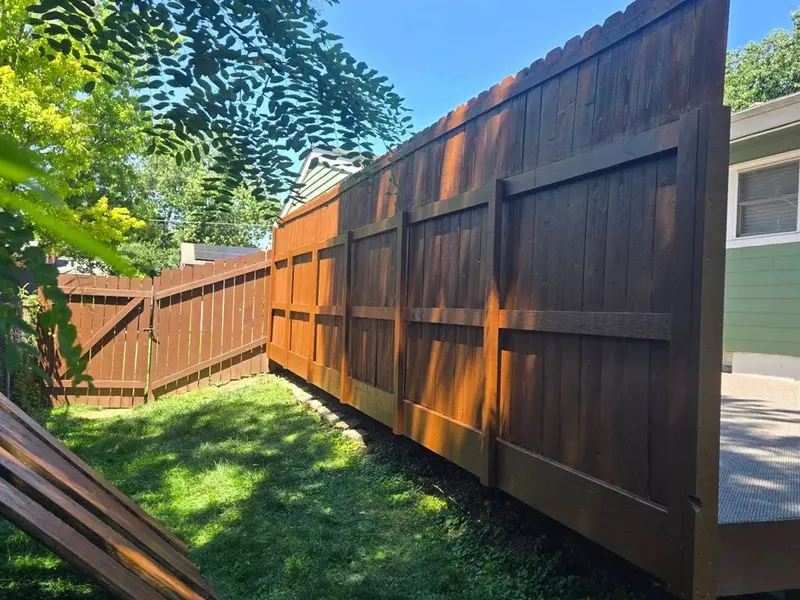

Severna Park is a peninsula community with water on two sides, and that geography is the whole story for decks here. We repair, restore and refinish decks throughout Severna Park, Maryland — corroded connectors on waterfront structures, shaded boards that never fully dry under the tree cover, and railings that have quietly stopped being solid. We're a repair company, not a deck builder: we fix what can be fixed and tell you straight when a deck is past saving.
A high-value housing stock in a genuinely hard environment
Severna Park runs a median household income around $174,485 and a median home value near $672,651 — the highest-value market on our service list. These are houses where the deck is a used part of the home rather than an afterthought, which is exactly why we see so much wear-driven work here rather than neglect-driven work.
The community covers 19.29 square miles, of which 2.76 is water, sitting between the Severn River and the Magothy River roughly eight miles north of Annapolis. MD-2 (Ritchie Highway) splits the community down the middle, with I-97 to the west and MD-648 (Baltimore & Annapolis Boulevard) and the B&A Trail running the length of it. Mature tree canopy covers most of the residential streets. Water, shade and salt in the air are a combination that punishes decks in three different ways at once.
What actually fails on a Severna Park deck
- Connectors and fasteners first. Rust-colored streaking around screws, bolts and joist hangers means the metal is corroding and the wood around it is staying wet. A connector that has lost section is no longer holding the joint it was installed to hold. We use triple-dip galvanized or stainless hardware on repairs near the water for this reason.
- The ledger connection. The board bolting your deck to the house is the most failure-prone component on any deck, and older decks were routinely nailed rather than bolted, with no continuous flashing behind them. On a waterfront lot there is no margin for a wet rim joist.
- Post bases and stair stringers. The code requires a one-inch standoff above concrete for weather- and splash-exposed post bases, and wood within six inches of exposed ground must be ground-contact rated. Stringers set straight onto soil or a dropped block rot from the bottom up with no visible warning.
- The finish, constantly. The area gets roughly 45 inches of rain a year — the sum of the National Weather Service's 1991–2020 monthly normals at BWI — with humidity near 75% from August through October and a freeze-free season over 230 days. Temperatures swing above and below freezing repeatedly through the winter, so water gets into every joint and pries it wider each season.
Add the canopy: leaf and pine-needle debris blocks sunlight and compounds algae and mildew growth, and horizontal deck boards hold standing water while vertical faces shed it. That is why the walking surface fails first, and why the shaded half of a Severna Park deck can look a decade older than the half that gets afternoon sun. If you want to check yours before calling anyone, work through our deck safety inspection checklist.
Anne Arundel County permit rules — the attached-deck trap
Anne Arundel is the only county in this metro that separates attached decks from detached ones, and the distinction catches people out constantly:
- An attached deck always requires a permit — regardless of size, regardless of height. There is no small-deck escape hatch if it is fastened to the house.
- A detached deck is exempt only if all three are true: under 200 square feet, under 3 feet high, and outside the Critical Area. Miss any one and you need a permit.
- Board-only replacement is exempt. Re-decking sound framing does not require a permit — Anne Arundel is one of only two counties around Baltimore that say so explicitly.
- Inspections run footing, framing and final, and the county works to the 2021 International Residential Code.
- Staining, sealing and power washing are not addressed in the county's permit materials at all — which is not the same thing as "no permit needed," and we'd rather tell you that accurately than guess.
The Critical Area clause deserves its own line in Severna Park. With tidal water on two sides of the community, a detached structure that would clear the exemption elsewhere in the county may not clear it here. We confirm what applies at your address before scheduling anything.
Deck repair services we do in Severna Park
- Structural and rot repair — joists, beams, posts, footings and failing ledgers.
- Railing repair and code retrofit — guards are required over 30 inches above grade, at least 36 inches high on a house, with no gap a 4-inch sphere can pass through.
- Deck board replacement and stair and step repair.
- Deck restoration, power washing and stripping and staining and sealing — the core of the work here.
- Deck waterproofing where a deck sits over a space that needs to stay dry.
- Deck safety inspections with photos and a written punch list.
Where we work in Severna Park
We cover the whole of 21146, working the MD-2 corridor and the side streets off MD-648 and the B&A Trail — including Linstead, and the neighborhoods around Severn School, which has been here since 1914, St. John the Evangelist School, Severna Park Elementary, Middle and High, and the Robinson House, listed on the National Register in 2009. If your street runs down toward either river, expect the shade-and-corrosion combination rather than the structural-height problems we see in the hillier parts of the metro.
We also work next door in Arnold, just down the Broadneck Peninsula, and inland in Crofton — same county, same permit rules, very different terrain. Trying to decide whether yours is worth repairing at all? Here's how we make the repair-or-replace call.
